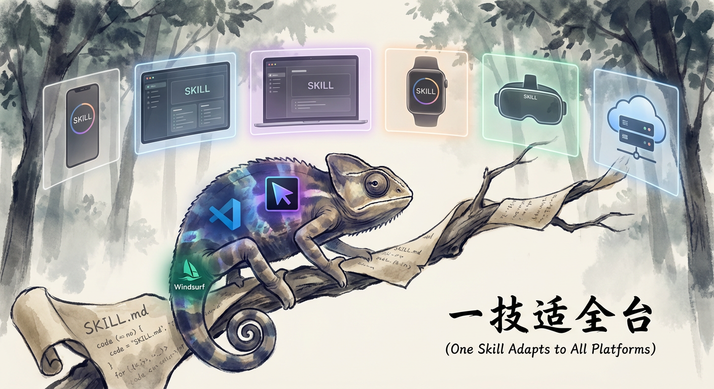

第 10 章：多平台适配 — 一个 Skill 跑遍所有 AI 助手

核心论点：SKILL.md 不是某个平台的方言，而是一份可移植的 AI 行为合约。只要理解各平台读取指令的方式差异，一份 Skill 就能在 Claude Code、Cursor、Windsurf、Cline、Codex CLI、Gemini CLI 上无缝运行。
10.1 为什么需要跨平台？
2025 年初，AI 编程助手市场进入“战国时代“。Claude Code 率先推出 SKILL.md 规范，Cursor 用 .cursorrules，Windsurf 有自己的 Rules 体系，Cline 支持 .clinerules，OpenAI 推出 Codex CLI 读取 AGENTS.md，Google 的 Gemini CLI 读取 GEMINI.md。
一个有趣的现象是：这些格式在结构上高度趋同。它们本质上都是 Markdown 文件，包含角色定义、工作流程、约束条件。差异更多在“入口文件名“和“触发方式“上，而非指令语法本身。
这意味着一个设计良好的 Skill，核心逻辑只需要写一次，适配工作量远比想象中小。
可移植性的商业价值
- 用户覆盖面：你的 Skill 不绑定某个 IDE，受众直接翻倍
- 抗风险：平台兴衰不影响你的 Skill 资产
- 复用投资：Skill 的核心知识（workflow、prompt engineering）是平台无关的
10.2 平台差异全景分析
我们先建立一张全面的对比表，再逐一剖析关键差异。
表 10-1：六大 AI 编程助手 Skill 支持对比（2026 年 4 月）
| 特性 | Claude Code | Cursor | Windsurf | Cline | Codex CLI | Gemini CLI |
|---|---|---|---|---|---|---|
| 指令文件名 | SKILL.md / CLAUDE.md | .cursorrules | .windsurfrules | .clinerules | AGENTS.md | GEMINI.md |
| 文件格式 | Markdown + YAML frontmatter | Markdown | Markdown | Markdown | Markdown | Markdown |
| Frontmatter 支持 | 完整（name, description, metadata） | 忽略但不报错 | 忽略 | 忽略 | 忽略 | 部分解析 |
| 安装位置 | ~/.claude/skills/ | 项目根目录 | 项目根目录 | 项目根目录 | 项目根目录 | ~/.gemini/ 或项目根 |
| 触发方式 | /skill-name 或自然语言 | 自动加载 | 自动加载 | 自动加载 | 自动加载 | /skill-name 或自然语言 |
| 多 Skill 管理 | 每个 Skill 独立目录 | 单文件，需手动分段 | 单文件 | 单文件 | 每个 Agent 独立文件 | 独立目录 |
| Vision（图片理解） | 支持 | 支持 | 支持 | 取决于底层模型 | 支持 | 支持 |
| 交互式提问 | AskUserQuestion 工具 | 直接对话 | 直接对话 | 直接对话 | 直接对话 | 直接对话 |
| 脚本执行 | Bash / Python 自动沙盒 | 需用户确认 | 需用户确认 | 需用户确认 | 沙盒执行 | Bash 沙盒 |
| MCP 集成 | 原生支持 | 支持 | 支持 | 支持 | 不支持 | 支持 |
三个关键差异点
差异 1：入口文件机制
Claude Code 和 Gemini CLI 采用“专用目录 + 按需加载“模式——Skill 安装在全局目录中，用户通过 slash command 或自然语言触发。Cursor、Windsurf、Cline 采用“项目级自动加载“模式——规则文件放在项目根目录，每次会话自动注入 context。
这个差异决定了适配策略：你需要为“自动加载型“平台提供一份精简的规则文件，而不是把完整的 SKILL.md 原封不动丢进去。
差异 2：交互式提问
Claude Code 提供了 AskUserQuestion 这个专用工具，Skill 可以在 workflow 中主动向用户提问。其他平台没有等价机制，但“直接在回复中提问并等待用户回答“在所有平台都能工作。
这意味着你的 SKILL.md 中写的 Use AskUserQuestion to ask... 在 Cursor 里会被理解为“向用户提问“，AI 会自然地在回复中提出问题。行为等价，只是机制不同。
差异 3：Frontmatter 处理
只有 Claude Code 会解析 YAML frontmatter 中的元数据（name、version、tags）。其他平台会忽略 frontmatter 块，但不会报错——Markdown 渲染器天然会跳过 --- 围起来的内容。
这是个好消息：frontmatter 是安全的跨平台附加信息，加了不影响任何平台。
10.3 可移植性设计：写一次，到处跑
基于以上分析，我们提炼出一套 Skill 可移植性设计原则。
原则 1：以 SKILL.md 为 Single Source of Truth
所有平台适配版本都从 SKILL.md 派生，而非反过来。SKILL.md 是完整版本，其他格式是它的子集。
SKILL.md (完整版 — Claude Code / Gemini CLI)
├── .cursorrules (适配版 — Cursor)
├── .windsurfrules (适配版 — Windsurf)
├── .clinerules (适配版 — Cline)
└── AGENTS.md (适配版 — Codex CLI)
原则 2：指令语法保持平台无关
避免在 Skill 正文中使用平台特有的 API 名称。以下是一些替换建议：
| 平台特有写法 | 可移植写法 |
|---|---|
Use AskUserQuestion to ask... | Ask the user: |
Use the Bash tool to run... | Run the following command: |
Use the Read tool to read... | Read the file at: |
Use the Write tool to write... | Write the following to: |
大多数 AI 助手都能理解这些通用指令。Claude Code 尤其聪明——它会自动把 Ask the user 映射到 AskUserQuestion 工具。
实战建议：如果你的 Skill 只发布到 Claude Code，用平台专属 API 名可以获得更精确的控制。如果你追求跨平台，使用通用描述。这是精确性与可移植性的 trade-off。
原则 3：Workflow 步骤用编号 + 大写标题
所有平台的 AI 都能理解编号步骤。使用 ### Step 1: ...、### Step 2: ... 这种格式，比自然段落描述的 workflow 更可靠地被各平台解析为顺序执行的步骤。
原则 4：脚本调用使用标准 CLI 接口
如果你的 Skill 包含脚本，使用 argparse（Python）或标准 CLI 参数格式。不要依赖平台特有的文件传递机制。
# Good — 任何平台都能调用
python scripts/analyze.py --input image.png --output report.md
# Bad — 依赖 Claude Code 的工具链
# "Use the Bash tool to execute scripts/analyze.py with the file the user provided"
10.4 Skill 触发方式的跨平台兼容
触发方式是跨平台适配中最微妙的部分。
Claude Code：Slash Command + 自然语言
/visual-clone # slash command 触发
"帮我提取这张图的风格" # 自然语言触发（通过 description 中的 trigger 关键词匹配）
Claude Code 的 SKILL.md frontmatter 中 description 字段支持 Trigger when: 语法，AI 会根据用户输入自动匹配。这是最精确的触发机制。
Cursor / Windsurf / Cline：自动加载
这类平台没有“触发“概念——规则文件在会话开始时自动加载到 context 中。AI 始终“知道“这些规则，在相关场景下自动应用。
适配方法：将 Skill 的核心指令精简后放入 .cursorrules，在开头加一句触发条件：
## Visual Clone — Design DNA Extractor
**When to activate**: When the user provides a reference image and asks to
extract style, replicate a design, clone visual elements, or generate a
replication prompt.
**When NOT to activate**: Normal coding tasks, debugging, file editing.
这种“条件激活“的写法让 AI 知道何时应用这套规则，避免在不相关的场景中干扰正常编程。
Codex CLI / Gemini CLI：类 Claude Code 模式
Codex CLI 的 AGENTS.md 和 Gemini CLI 的 GEMINI.md 支持类似 Claude Code 的目录结构。适配工作量最小——通常只需要复制 SKILL.md 并调整文件名。
表 10-2：触发方式适配速查表
| 平台 | 触发方式 | 适配要点 |
|---|---|---|
| Claude Code | Slash command / 自然语言 / 手动 | frontmatter description 写 trigger 关键词 |
| Cursor | 自动加载 | 加 “When to activate” 条件段 |
| Windsurf | 自动加载 | 同 Cursor |
| Cline | 自动加载 | 同 Cursor |
| Codex CLI | 按目录加载 | 重命名为 AGENTS.md |
| Gemini CLI | Slash command / 自然语言 | 重命名为 instructions.md 放入 ~/.gemini/skills/ |
10.5 测试矩阵：如何验证跨平台表现
跨平台 Skill 需要系统化测试。我们推荐一个三层测试矩阵。
层 1：语法兼容性（静态检查）
验证 Skill 文件在各平台能被正确解析，不报错、不丢内容。
| 检查项 | 方法 |
|---|---|
| Frontmatter 不破坏解析 | 在各平台加载文件，确认 AI 能看到 frontmatter 之后的内容 |
| Markdown 标题层级正确 | 确认 ## / ### 不被平台特有的解析器截断 |
| 代码块完整 | 确认 ``` 代码块在各平台正确闭合 |
| 文件大小不超限 | 各平台的 context window 有上限，确认 Skill 不超过 |
层 2：行为一致性（功能测试）
用相同的输入在各平台运行 Skill，对比输出。
## 测试用例：visual-clone 基础流程
**输入**：一张日式极简海报图片
**预期行为**：
1. ✅ AI 是否主动询问目标场景？
2. ✅ 输出是否包含所有 8 个 Design DNA 维度？
3. ✅ 颜色值是否使用 hex 格式？
4. ✅ 是否生成 Replication Prompt？
5. ✅ 中英双语标题是否正确？
层 3：边界场景（鲁棒性测试）
| 场景 | 预期 |
|---|---|
| 用户不提供图片 | AI 主动要求上传 |
| 用户用英文交流 | AI 切换为英文回复（如果 Skill 支持） |
| 图片模糊 / 低分辨率 | AI 给出 best-effort 分析并标注不确定项 |
| 用户中途改变需求 | AI 能回溯并调整 |
自动化测试脚本
对于带脚本的 Skill，可以编写一个 CI 级别的兼容性检查：
#!/bin/bash
# test-portability.sh — 检查 Skill 文件的跨平台基础兼容性
SKILL_FILE=$1
# 1. frontmatter 格式检查
if head -1 "$SKILL_FILE" | grep -q '^---$'; then
echo "✅ Frontmatter detected"
# 检查 frontmatter 是否正确闭合
awk '/^---$/{c++} c==2{print "✅ Frontmatter properly closed"; exit}' "$SKILL_FILE"
fi
# 2. 平台特有 API 引用检查
if grep -q 'AskUserQuestion' "$SKILL_FILE"; then
echo "⚠️ Contains Claude-specific 'AskUserQuestion' — may need generic alias for other platforms"
fi
# 3. 文件大小检查（大多数平台 context 限制在 ~200K tokens）
SIZE=$(wc -c < "$SKILL_FILE")
if [ "$SIZE" -gt 50000 ]; then
echo "⚠️ File size ${SIZE} bytes — may exceed some platforms' context limits"
else
echo "✅ File size OK (${SIZE} bytes)"
fi
# 4. 代码块配对检查
OPEN=$(grep -c '```' "$SKILL_FILE")
if [ $((OPEN % 2)) -eq 0 ]; then
echo "✅ Code blocks properly paired ($OPEN markers)"
else
echo "❌ Odd number of code block markers ($OPEN) — likely unclosed block"
fi
10.6 案例：将 lovstudio:visual-clone 适配到 Cursor
让我们用一个真实案例走完整个适配流程。lovstudio:visual-clone 是一个纯指令型 Skill（无脚本），用于从参考设计图中提取视觉 DNA 并生成复刻指令。
原始 SKILL.md 结构
---
name: lovstudio:visual-clone
description: >
Analyze a reference design image and extract visual DNA...
Trigger when: user asks to "extract style", "replicate this", "clone this design"...
license: MIT
compatibility: >
No dependencies. Pure AI visual analysis — requires a model with vision capability.
metadata:
author: lovstudio
version: "1.0.1"
tags: design, visual-analysis, style-extraction, prompt-generation
---
这个 Skill 有几个跨平台适配要点：
- 依赖 Vision 能力 — 需要确认目标平台支持图片理解
- 使用
AskUserQuestion— 需要替换为通用提问方式 - 输出格式严格 — 8 个 DNA 维度 + Replication Prompt
- 中英双语 — 目标平台的模型需要支持中文
Step 1：分析平台能力匹配
Cursor 使用 Claude / GPT-4 作为底层模型，两者都支持 Vision 和中文。能力匹配没有问题。
Step 2：生成 .cursorrules 适配版
# Visual Clone — Design DNA Extractor
## When to Activate
Activate this ruleset when the user provides a reference design image and asks to:
- Extract style / replicate a design / clone visual elements
- 提取设计要素 / 复刻风格 / 分析视觉
Do NOT activate for normal coding, debugging, or file editing tasks.
## Workflow
Follow these steps in order:
### Step 1: Receive the Reference Image
Read the image the user provides. If no image is given, ask them to provide one.
### Step 2: Ask Context
Before analysis, ask the user:
"你想把这个风格复刻到什么场景？（例如：海报、社交媒体图、名片、PPT 封面……）
如果还没想好也可以先提取，之后再套用。"
### Step 3: Analyze — Extract Design DNA
Examine the image and extract ALL of the following 8 dimensions.
Use concrete values (hex colors, approximate sizes, named fonts).
Output a Markdown document titled "Design DNA" with these sections:
1. **Layout / 布局** — composition, content zones, hierarchy, aspect ratio
2. **Color Palette / 色彩** — primary/secondary/accent colors (hex), ratios, mood
3. **Typography / 字体** — headline/body fonts, weight hierarchy, spacing
4. **Visual Style / 视觉风格** — design era, illustration style, shape language
5. **Texture & Material / 质感** — surface feel, overlay effects, shadow, depth
6. **Imagery / 图像处理** — photo treatment, illustration integration, decorative elements
7. **Copy & Tone / 文案风格** — headline tone, information density, language register
8. **Spacing & Rhythm / 间距与节奏** — density, white space, repetition patterns
### Step 4: Generate Replication Prompt
Based on the DNA, generate a self-contained replication prompt with:
- Visual Brief (1-2 sentences)
- Specifications (layout, colors, typography, style, texture, imagery, spacing, tone)
- Adaptation notes for the user's target scenario
- AI Image Generation prompt (English, under 200 words)
### Step 5: Deliver
Output the full Design DNA + Replication Prompt as a single Markdown document.
## Output Rules
- Color values MUST include hex codes
- Font identification: name if recognizable, otherwise describe precisely
- Section headers in 中英双语 format
- Technical terms in English, descriptions in Chinese
- Be specific: "12px letter-spacing, tight leading" > "modern typography"
- Replication Prompt must be copy-pasteable as a standalone brief
Step 3：对比分析
让我们对比适配前后的变化：
| 方面 | SKILL.md 原版 | .cursorrules 适配版 |
|---|---|---|
| Frontmatter | 完整 YAML（name, version, tags） | 移除（Cursor 不解析） |
| 触发方式 | Trigger when: 在 description 中 | 独立 “When to Activate” 段落 |
| 交互提问 | Use AskUserQuestion to ask... | Ask the user: |
| 步骤详细度 | 每个维度有子列表 | 精简为一行摘要（节省 context） |
| 总行数 | ~150 行 | ~60 行 |
关键改动只有三处：
- 去 frontmatter — Cursor 不需要，去掉减少噪音
- 通用化交互指令 — 把
AskUserQuestion替换为ask the user - 压缩篇幅 — Cursor 的
.cursorrules会自动注入每次对话，所以要控制 token 消耗
核心 workflow 逻辑、输出格式、质量要求——一行都没改。
Step 4：验证
在 Cursor 中实测：
- 打开一个项目，确认
.cursorrules被加载 - 拖入一张设计参考图，输入“帮我提取这个设计的风格“
- 验证 AI 是否按照 5 步 workflow 执行
- 验证输出是否包含 8 个 DNA 维度和 Replication Prompt
10.7 适配自动化：从手工到管线
手动为每个平台维护一份规则文件显然不 scale。我们可以用一个简单的构建脚本实现自动化：
#!/usr/bin/env python3
"""generate_platform_rules.py — 从 SKILL.md 生成各平台适配文件"""
import re
import sys
from pathlib import Path
def strip_frontmatter(content: str) -> str:
"""移除 YAML frontmatter"""
if content.startswith('---'):
end = content.find('---', 3)
if end != -1:
return content[end + 3:].lstrip('
')
return content
def genericize_tools(content: str) -> str:
"""将平台特有 API 替换为通用写法"""
replacements = {
r'Use `?AskUserQuestion`? to (?:ask|collect|prompt)': 'Ask the user',
r'Use the `?Bash`? tool to (?:run|execute)': 'Run',
r'Use the `?Read`? tool to read': 'Read',
r'Use the `?Write`? tool to write': 'Write to',
}
for pattern, replacement in replacements.items():
content = re.sub(pattern, replacement, content, flags=re.IGNORECASE)
return content
def add_activation_guard(content: str, triggers: list[str]) -> str:
"""在文件开头添加条件激活段落"""
guard = "## When to Activate
"
guard += "Activate this ruleset when the user " + ", ".join(triggers) + ".
"
guard += "Do NOT activate for normal coding, debugging, or file editing tasks.
"
return guard + content
def generate(skill_path: str, output_dir: str):
content = Path(skill_path).read_text()
body = strip_frontmatter(content)
generic = genericize_tools(body)
# Claude Code — 原样使用
# Cursor
Path(f"{output_dir}/.cursorrules").write_text(generic)
# Windsurf
Path(f"{output_dir}/.windsurfrules").write_text(generic)
# Cline
Path(f"{output_dir}/.clinerules").write_text(generic)
# Codex CLI
Path(f"{output_dir}/AGENTS.md").write_text(generic)
print(f"Generated platform rules in {output_dir}")
if __name__ == '__main__':
generate(sys.argv[1], sys.argv[2])
这个脚本做了三件事：
- 剥离 frontmatter（对“自动加载型“平台是噪音）
- 将 Claude Code 专属工具名替换为通用描述
- 输出各平台对应的文件名
在 CI 中集成这个脚本，每次 SKILL.md 更新时自动重新生成所有平台的适配文件。
10.8 跨平台设计的常见陷阱
陷阱 1：Context 预算不一致
各平台可用的 context window 大小不同。Claude Code 可以按需加载 Skill（不占常驻 context），但 Cursor 的 .cursorrules 是每次会话都注入的。一个 5000 token 的 SKILL.md 在 Claude Code 上没问题，但在 Cursor 上可能挤占用户的编码 context。
解法：为“自动加载型“平台准备一个精简版，控制在 2000 token 以内。核心 workflow 和约束保留，详细的示例和说明移除。
陷阱 2：工具能力假设
有些 Skill 依赖特定工具能力。例如 lovstudio:any2pdf 需要执行 Python 脚本，lovstudio:tech-book 需要调用 gh CLI。这些在 Claude Code 的沙盒中可以直接运行，但在 Cursor 中需要用户手动确认每一步 shell 命令。
解法：在 Skill 的 compatibility 字段中明确标注依赖。如果某个平台不支持必要能力，在适配版中加入 fallback 指引：
> **Note**: If your AI assistant cannot execute shell commands directly,
> run the following command manually in your terminal:
> ```bash
> python scripts/md2pdf.py --input doc.md --output doc.pdf
> ```
陷阱 3：交互模型差异
Claude Code 的 AskUserQuestion 会暂停执行并等待用户回答，形成一个明确的“问-答“cycle。其他平台的 AI 可能在提问后继续生成内容，而不是等待。
解法：在 workflow 中用强语气标注暂停点——
### Step 2: Ask Context
Ask the user the following question. **STOP and WAIT for their response
before proceeding to Step 3. Do NOT assume or skip.**
STOP and WAIT 这种大写指令在所有主流 LLM 上都被证实有效。
陷阱 4：路径与环境差异
Claude Code 的 Skill 安装在 ~/.claude/skills/ 下，脚本路径是相对于 Skill 目录的。当你把 Skill 复制到 Cursor 项目根目录时，脚本路径需要调整。
解法：使用相对于项目根的路径，或在 Skill 中写明脚本的绝对安装路径：
## Setup
1. Clone this skill: `git clone https://github.com/user/skill.git ~/.skills/visual-clone`
2. Scripts are at: `~/.skills/visual-clone/scripts/`
10.9 未来展望：SKILL.md 走向真正的标准
2026 年的趋势已经很清楚——AI 编程助手的指令格式正在收敛。
Cursor 在 2025 年底开始支持直接读取 SKILL.md 文件。Gemini CLI 和 Codex CLI 的指令格式与 SKILL.md 高度相似。各平台厂商都在意识到：用户不愿意为每个平台重写一套规则。
可以预见几个方向：
- SKILL.md frontmatter 成为事实标准：name、description、compatibility 这些字段会被更多平台解析
- 跨平台 Skill 市场：agentskills.io 已经在做的事，会有更多平台接入
- 安装协议统一：类似
npm install的一键安装方式，自动适配当前平台 - 平台差异趋近于零：当所有平台都用 Markdown + YAML frontmatter，“适配“这个概念会消失
作为 Skill 作者，今天投入可移植性设计的成本非常低——本质上就是“别用平台专属 API 名“和“控制文件大小“两件事。但回报是你的 Skill 资产不被任何单一平台锁定。
本章小结
| 要点 | 一句话总结 |
|---|---|
| 平台差异的本质 | 入口文件名和触发方式不同，指令语法高度趋同 |
| 可移植性设计原则 | SKILL.md 为 Single Source of Truth，通用指令语法，标准 CLI 接口 |
| 触发方式适配 | Claude Code 用 slash command，自动加载型平台加 “When to Activate” 段 |
| 测试矩阵 | 三层：语法兼容 → 行为一致 → 边界鲁棒 |
| 最大陷阱 | Context 预算差异——自动加载型平台要精简版 |
| 自动化适配 | 一个 Python 脚本：剥 frontmatter + 通用化工具名 + 输出多格式 |
| 未来趋势 | SKILL.md 格式正在成为跨平台事实标准 |